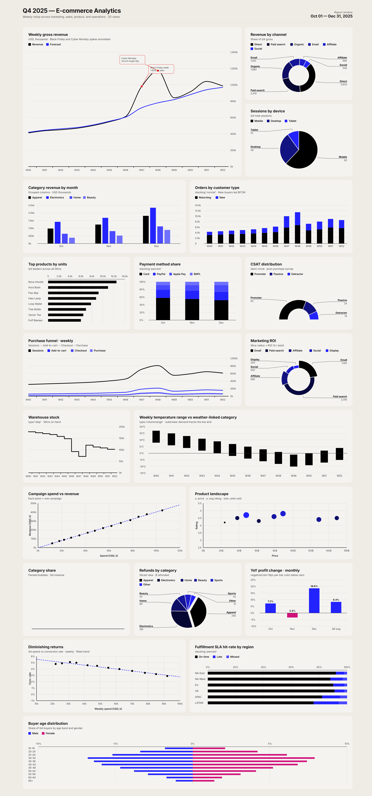

Turn any data into a finished HTML dashboard
chart-dashboard is a free, open-source Claude Agent Skill that turns raw data into a finished HTML dashboard or illustrated report in a single prompt. Hand Claude a table, a CSV, or a page of notes and get back one self-contained HTML file with interactive SVG charts — no CDN, no build step, no API keys.

examples/.Why it exists
Chart libraries render what you tell them to render. This skill decides what to render — which is the part that takes design judgment. It carries a chart-selection table mapping data shapes to chart types, layout rules for grid composition, and a bundled 130 KB SVG renderer, so output stays consistent from the first dashboard to the fiftieth.
| chart-dashboard | Chart.js / Plotly | BI tool screenshot | |
|---|---|---|---|
| Input | Plain-language data | Hand-written config | Manual building |
| Picks chart type for you | Yes | No | No |
| Runtime dependencies | None | npm / CDN | SaaS account |
| Works offline | Yes | Usually not | No |
| Output | One portable HTML file | Your app | PNG |
| Cost | Free, MIT | Free | Usually paid |
Install
Claude Code — plugin
/plugin marketplace add raghuramsirigiri/claude-chart-dashboard
/plugin install chart-dashboard@chart-dashboardClaude Code — manual
git clone https://github.com/raghuramsirigiri/claude-chart-dashboard.git
cp -r claude-chart-dashboard/skills/chart-dashboard ~/.claude/skills/claude.ai, Claude Desktop, and the API
cd claude-chart-dashboard/skills && zip -r chart-dashboard.zip chart-dashboardThen upload it under Settings → Capabilities → Skills.
How to use it
Ask in plain language — the skill triggers on its own, no slash command needed.
- “Build me a dashboard from this — Q1 revenue 412k, Q2 438k, Q3 451k, Q4 602k.”
- “Here's our support CSV. Make an analytics page showing ticket volume and backlog.”
- “Write up a retrospective on our 2025 uptime with charts.”
- “Turn this spreadsheet into a client-ready report with our brand colors.”
Frequently asked questions
What are the dependencies?
None. The generated page loads three local files — charts.js,
theme.js, and charts.css, 130 KB total — copied next
to your HTML. There is no npm install, no CDN script tag, no build step, and no
framework. Open the file in any browser from the last decade and it renders.
Does it work offline?
Yes. The only outbound request is an optional Google Fonts import for the Inter
typeface. If that fails — offline, air-gapped, or behind a strict content
security policy — the charts fall back to Segoe UI or Helvetica and everything
still renders. Delete the @import line for zero network calls.
Is my data sent anywhere?
The generated HTML makes no network calls and contains no analytics or telemetry. Your data is embedded in the file itself and stays wherever you put the file. Claude itself processes your prompt normally — this skill adds no extra data flow.
Can I use chart-dashboard commercially?
Yes. MIT licensed, including client work and commercial products. Attribution is appreciated but not required.
Does it work in Claude Code, claude.ai, or both?
Both, plus Claude Desktop and the Claude API. The Agent Skills format is shared across all of them — see Install for the path matching your setup.
How is this different from asking Claude for a chart directly?
Without the skill, Claude reaches for whatever library it guesses at, output quality swings between prompts, and pages often break offline because of CDN script tags. The skill fixes the renderer, carries a chart-selection table so the chart type matches the data shape, and enforces layout rules — so the tenth dashboard looks like the first.
Can I edit the generated dashboard afterwards?
Yes. The output is readable HTML with one Charts.*() call per
panel. Edit the data arrays by hand, or ask Claude to change a panel and it will
edit the file in place.
How many panels should a dashboard have?
Eight to twenty. Below eight, a report format usually reads better; above twenty, split it into multiple pages. The skill follows this by default.
Which chart types are supported?
Line, spline and step; grouped, stacked, 100% stacked, range, pyramid and 3D columns and bars; donut and pie including semi-circle and variable radius; scatter with linear regression; bubble and packed bubble. Maps, Sankey diagrams, treemaps and heatmaps are not supported yet.
Built by
Raghuram Sirigiri — issues and pull requests welcome on GitHub. If the skill saved you time, a star helps other people find it.